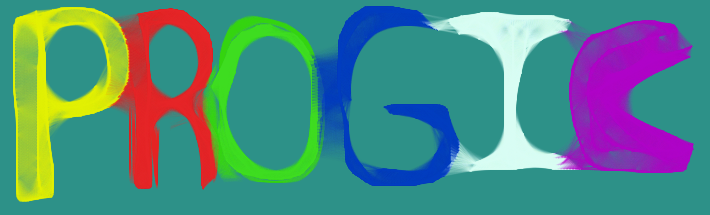

Conócenos

¿Quiénes somos?
PROGIC es una iniciativa por parte de alumnos de Ciencia de la Computación UCSP que se propone principalmente brindar ayuda a alumnos ingresantes de cualquier universidad,
que estén iniciándose en el mundo de la programación.
Somos una organización que busca impulsar el aprensdizaje de la progamación.
Nuestros Objetivos
El objetivo de PROGIC es brindarte ayuda en tus tareas.
También buscamos el aprendizaje de distintas ramas en ciencia de la computación.
Reglas
PROGIC es una plataforma donde podrás acceder a tareas hechas, pero con el único fin de ayudarte
No confundas este sitio, nosotros solo queremos ayudarte.
Bueno que esperas empieza a disfrutar.